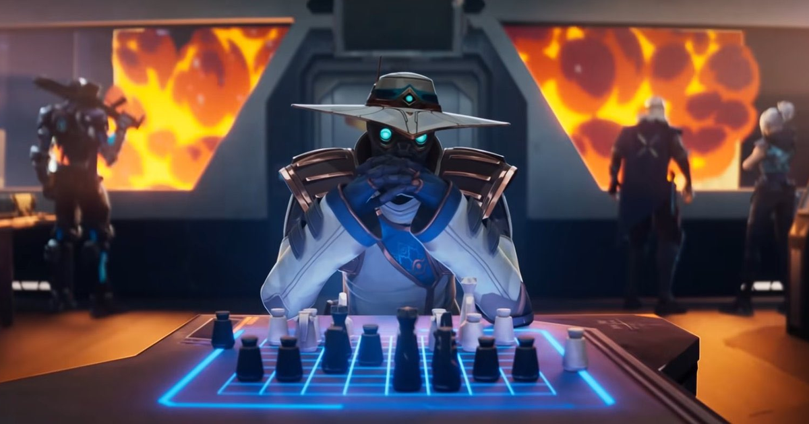

Na realidade onde a informação é tão valiosa quanto o poder físico, Cypher se destaca como o mestre absoluto da vigilância e segurança. Conhecido por seu nome de código, Cypher, seu verdadeiro nome é Amir El Amari, um agente enigmático cuja especialidade é o monitoramento e controle de informações. Nascido em Marrocos, Amir transformou sua paixão por sistemas de segurança e programação em uma arte. Amir El Amari cresceu em uma família modesta em Rabat, capital do Marrocos. Desde jovem, ele demonstrou um fascínio por mecanismos e tecnologia, desmontando e remontando qualquer aparelho que encontrasse. Esse interesse se aprofundou quando sua família foi vítima de um ataque que poderia ter sido evitado com melhores medidas de segurança. Determinado a nunca mais ser pego desprevenido, Amir dedicou sua vida a estudar e aprimorar técnicas de vigilância e proteção.
A jornada de Amir no campo da segurança começou com sua formação em engenharia eletrônica e ciência da computação. Ele se especializou em sistemas de segurança e criptografia, tornando-se um expert em criar e desarmar dispositivos de vigilância. Sua habilidade excepcional em programação permitiu-lhe desenvolver algoritmos complexos para monitoramento em tempo real, coleta de dados e análise de ameaças. Cypher é mais do que um simples vigia; ele é um programador habilidoso que vê a segurança como um quebra-cabeça complexo. Ele constantemente aperfeiçoa seus dispositivos, atualizando seus códigos e algoritmos para se adaptar às novas ameaças e superar as contramedidas dos inimigos. Seu trabalho envolve criptografia avançada, análise de dados em tempo real e engenharia reversa, tudo para garantir que suas ferramentas sejam sempre as mais eficazes.
Embora Cypher trabalhe nas sombras, suas ações têm um impacto profundo no campo de batalha. Ele entende que a informação é poder e utiliza esse conhecimento para manter seus aliados seguros e seus inimigos sob constante pressão. Sua dedicação à segurança e vigilância é movida pela perda pessoal, mas também pelo desejo de proteger aqueles que não podem se proteger sozinhos. Reconhecendo seu talento único, o Valorant Protocol recrutou Amir, que adotou o codinome Cypher. Sua capacidade de controlar o campo de batalha através da informação e vigilância o tornou uma peça chave nas operações da equipe. Cypher utiliza uma combinação de dispositivos tecnológicos avançados para manter seus inimigos sob constante vigilância, antecipar seus movimentos e desmantelar suas estratégias.
Cypher deixa um legado de excelência na segurança e vigilância. Sua história é um lembrete de que a verdadeira força não reside apenas na força bruta, mas na inteligência, estratégia e controle da informação. Ele é o guardião silencioso que observa e protege, garantindo que o Valorant Protocol esteja sempre um passo à frente de qualquer ameaça.
Feito por: Letícia Pinheiro.